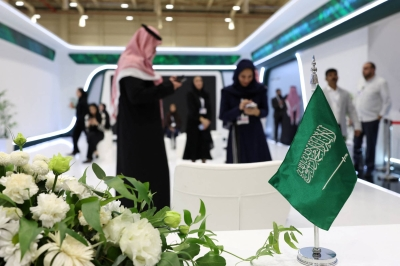

Saudi Arabia's influence loomed large over failed COP31 deal
Saudi Arabia's influence loomed large over failed COP31 deal Reuters

Saudi Arabia's influence loomed large over failed COP31 deal Reuters
Désiré Doué sustained an ACL injury in PSG’s 3-2 win at Nice and joins Khvicha Kvaratskhelia on the treatment table By Get French Football News Luis Enrique is in uncharted territory, even if he insists that “it isn’t a first”. Since arriving at Paris Saint-Germain in 2023, only
Scotland intend to bring fancied Sweden's World Cup dream "crashing down - and do it in a truly Scottish way", says manager Melissa Andreatta.
Steven Pressley says he felt embarrassed by Dundee's 8-0 "humiliation" by Hearts and that there is a "fragility" in his squad.
Tyson Fury describes hearing voices in his head when he suffered a breakdown in 2015, and was also diagnosed with bipolar disorder.
The United Kingdom will host a football World Cup for the first time since 1966.
The Irish Football Association's director of women's football Angela Platt says they are "still working through" plans with the Northern Ireland government to ensure there is funding available to make the necessary upgrades to Windsor Park in time for the 2035 World Cup.

Looking for something specific? Search every story.